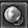
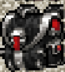

Como funciona
Aqui estão os itens mais fortes do servidor. Basta clicar na bigorna de forja para ver em detalhes os itens necessários para forjar cada peça dessa sala.
Isso torna cada item do servidor muito valioso: classe 2, 3, 4, tokens de Warzone, Major Tokens, Gold Token, Silver Token e vários outros materiais continuam úteis. A ideia é que nada seja descartável.
De Sanguine a Ancient Void
Conquiste a base, prepare os upgrades e alcance a evolução final dessa linha de itens.
Comece com um item Sanguine
Os itens Sanguine são conquistados em bosses ou na Roleta do jogo ↗. Depois, a progressão passa pelo craft de Sanguine Upgrade, pelo craft de Void Upgrade e, por fim, pelo craft da própria arma Ancient Void.
Na sala de Craft, clique na bigorna para conferir a receita e reunir os materiais necessários.

Sanguine Upgrade
Sanguine → Grand Sanguine
Crafte o Sanguine Upgrade e use-o no item Sanguine para transformá-lo em Grand Sanguine.
Materiais para o upgrade
- 15×The Essence of Murcion
- 15×The Essence of Ichgahal
- 15×The Essence of Vemiath
- 15×The Essence of Chagorz
- 10×Tainted Heart
- 10×Darklight Heart
- 100kkGold (Crystal Coins)

Void Upgrade
Grand Sanguine → Corrupted Void
Crafte o Void Upgrade e use-o no item Grand Sanguine para transformá-lo em Corrupted Void.
Materiais para o upgrade
- 2×Sanguine Upgrade
- 2×Megalomania’s Essence ↗
- 150×Divergence Token ↗
Os 2 Sanguine Upgrades desta receita são materiais do Void Upgrade, além daquele usado na primeira evolução do equipamento.
Peso do upgrade: 0,80 oz.Megalomania’s Essence
A Megalomania’s Essence é obtida por craft. Reúna as figurines abaixo e o gold para produzir o item.
Materiais para o craft
- 15×Figurine of Spite
- 15×Figurine of Megalomania
- 15×Figurine of Malice
- 15×Figurine of Cruelty
- 15×Figurine of Hatred
- 15×Figurine of Greed
- 100kkGold (Crystal Coins)
O Void Upgrade exige 2 Megalomania’s Essences, além dos outros materiais da receita.
Ancient Void
Com a arma Corrupted Void em mãos, crafte sua versão Ancient Void. Cada receita exige a arma correspondente: por exemplo, Corrupted Void Razor para Ancient Void Razor.
Receita comum dos Ancient Void
Todos os 10 itens abaixo- 1×Arma Corrupted Void correspondente
- 100×Divergence Token ↗
- 150×Elemental Core
- 20×Void Heart
- 20×Netherbound Heart
- 100×Major Crystalline Token
- 50×Precious Metal Bar
- 25×Precious Gold Bar
- 500kkGold (Crystal Coins)
A quantidade de materiais é a mesma para as dez armas apresentadas; o que muda é o item Corrupted Void usado como base. O custo em gold é 500kk (500.000.000). No Sanguine Upgrade, é 100kk (100.000.000).
Level 800+
Todos os Ancient Void listados exigem level 800 ou superior e a vocação indicada em cada item.
Consultar atributos ↓Atributos por item
10 itensAncient Void Razor
Item-base: 1× Corrupted Void Razor
- Ataque
- 68 Death
- Defesa
- 36
- Sword Fighting
- +5
- Cleave
- +50%
Ancient Void Hatchet
Item-base: 1× Corrupted Void Hatchet
- Ataque
- 64 Energy
- Defesa
- 35 +4
- Axe Fighting
- +5
- Life Leech
- +3%
- Mana Leech
- +1%
- Cleave
- +20%
Ancient Void Battleaxe
Item-base: 1× Corrupted Void Battleaxe
- Ataque
- 68 Fire
- Defesa
- 36
- Axe Fighting
- +5
- Cleave
- +50%
Ancient Void Cudgel
Item-base: 1× Corrupted Void Cudgel
- Ataque
- 64 Energy
- Defesa
- 35 +4
- Club Fighting
- +5
- Life Leech
- +3%
- Mana Leech
- +1%
- Cleave
- +20%
Ancient Void Bludgeon
Item-base: 1× Corrupted Void Bludgeon
- Ataque
- 68 Fire
- Defesa
- 36
- Club Fighting
- +5
- Cleave
- +50%
Ancient Void Bow
Item-base: 1× Corrupted Void Bow
- Ataque
- +15
- Alcance
- 6
- Hit%
- +8
- Distance Fighting
- +5
- Proteção Energy
- +6%
Ancient Void Crossbow
Item-base: 1× Corrupted Void Crossbow
- Ataque
- +18
- Alcance
- 6
- Hit%
- +9
- Distance Fighting
- +5
- Proteção Death
- +6%
Ancient Void Rod
Item-base: 1× Corrupted Void Rod
- Magic Level
- +5
- Earth Magic Level
- +2
- Ice Magic Level
- +2
- Critical Extra Damage
- +5%
- Life Leech
- +6%
- Mana Leech
- +3%
- Proteção Fire
- +7%
Ancient Void Coil
Item-base: 1× Corrupted Void Coil
- Magic Level
- +5
- Fire Magic Level
- +2
- Energy Magic Level
- +2
- Critical Extra Damage
- +8%
- Life Leech
- +2%
- Mana Leech
- +1%
- Proteção Ice
- +7%
Ancient Void Claws
Item-base: 1× Corrupted Void Claws
- Ataque
- 52
- Defesa
- 24
- Fist Fighting
- +5
- Magic Level
- +3
- Elemental Bond
- Earth
Planeje a coleta dos materiais
Essences dos bosses
As quatro essences usadas no Sanguine Upgrade são drops de bosses: The Essence of Murcion, Ichgahal, Vemiath e Chagorz.
Megalomania’s Essence
Obtida por craft, reunindo seis tipos de figurines e gold. São necessárias 2 para o Void Upgrade. Ver a receita ↗
Tainted e Darklight Heart
Tainted Heart e Darklight Heart dropam das criaturas das hunts Sanguine.
Divergence Token
Conquistado no sistema de Divergence ↗. Separe 150 para o Void Upgrade e 100 para o Ancient Void.
Uma trinket para cada etapa da sua jornada
Obtenha sua v1, avance pelo craft até a v3 e use os slots para adicionar o poder das Trinket Badges.
Escolha a versão da sua vocação
A Trinket v1 pode ser comprada na Store do game ou no NPC Divergence Seller.
O preço é por trinket v1. Escolha a trinket de Monk, Knight, Paladin, Sorcerer ou Druid, conforme sua vocação.
Duas trinkets, uma versão superior
As receitas são as mesmas para todas as vocações. Use duas trinkets da mesma vocação e versão para craftar a próxima evolução.
2× Trinket v1 → Trinket v2
- 2×Trinket v1 da mesma vocação
- 50×Precious Metal Bar
- 100×Expert Warzone Token
- 25×Divergence Token ↗
- 250kkGold (Crystal Coins)
2× Trinket v2 → Trinket v3
- 2×Trinket v2 da mesma vocação
- 50×Precious Metal Bar
- 300×Expert Warzone Token
- 25×Divergence Token ↗
- 500kkGold (Crystal Coins)
Localize a trinket na sala de Craft
Da esquerda para a direita: Monk → Knight → Paladin → Sorcerer → Druid.
250kk = 250.000.000 de gold · 500kk = 500.000.000 de gold.
Atributos das Trinkets v1, v2 e v3
Os bônus gerais abaixo estão presentes nas trinkets das cinco vocações. Depois, abra sua vocação para ver os atributos específicos e as reduções de cooldown da v3.
Bônus gerais · todas as vocações
| Atributo | v1 | v2 | v3 |
|---|---|---|---|
| Critical Hit Chance | 6% | 8% | 10% |
| Critical Extra Damage | +6% | +8% | +10% |
| Fatal | — | +0,5% | +2% |
| Momentum | — | +0,5% | +2% |
| Dodge | — | +0,5% | +2% |
| Transcendence | — | +0,5% | +2% |
— = atributo não listado para essa versão.
TRINKET DA VOCAÇÃOMonkv1 → v2 → v3
Além dos bônus gerais acima, compare os atributos de Monk’s Trinket:
| Atributo | v1 | v2 | v3 |
|---|---|---|---|
| Fist Fighting | +4 | +6 | +8 |
| Magic Level | +3 | +4 | +6 |
| Mantra | +5 | +7 | +9 |
| Life Leech | +7% | +9% | +11% |
| Mana Leech | +8% | +11% | +14% |
Redução de cooldown
exori mas amp pug−2sexori gran mas pug−6s
v2 e v3: 4 slots · Peso: 42,50 oz · Uso pela vocação Monk.
TRINKET DA VOCAÇÃOKnightv1 → v2 → v3
Além dos bônus gerais acima, compare os atributos de Knight’s Trinket:
| Atributo | v1 | v2 | v3 |
|---|---|---|---|
| Club Fighting | +4 | +6 | +8 |
| Sword Fighting | +4 | +6 | +8 |
| Axe Fighting | +4 | +6 | +8 |
| Shielding | +4 | +6 | +8 |
| Life Leech | +8% | +10% | +14% |
| Mana Leech | +8% | +11% | +14% |
| Proteção em todos os elementos | +2% | +4% | +6% |
Proteções: Physical, Fire, Earth, Energy, Ice, Holy e Death.
Redução de cooldown
exori gran−2sexori mas−4s
v2 e v3: 4 slots · Peso: 35,00 oz · Uso pela vocação Knight.
TRINKET DA VOCAÇÃOPaladinv1 → v2 → v3
Além dos bônus gerais acima, compare os atributos de Paladin’s Trinket:
| Atributo | v1 | v2 | v3 |
|---|---|---|---|
| Distance Fighting | +4 | +6 | +8 |
| Magic Level | +3 | +4 | +6 |
| Holy Magic Level | — | +2 | +3 |
| Life Leech | +7% | +9% | +11% |
| Mana Leech | +8% | +11% | +14% |
Redução de cooldown
exori gran con−2sexevo tempo mas s…−4s
O nome da segunda magia aparece cortado no painel de referência.
v2 e v3: 4 slots · Peso: 37,50 oz · Uso pela vocação Paladin.
TRINKET DA VOCAÇÃOSorcererv1 → v2 → v3
Além dos bônus gerais acima, compare os atributos de Sorcerer’s Trinket:
| Atributo | v1 | v2 | v3 |
|---|---|---|---|
| Magic Level | +4 | +6 | +8 |
| Fire Magic Level | — | +3 | +4 |
| Energy Magic Level | — | +3 | +4 |
| Death Magic Level | — | +3 | +4 |
| Life Leech | +4% | +6% | +8% |
| Mana Leech | +10% | +13% | +16% |
Redução de cooldown
exevo gran mas vis / flam−10sexevo vis hur−2s
v2 e v3: 4 slots · Peso: 35,00 oz · Uso pela vocação Sorcerer.
TRINKET DA VOCAÇÃODruidv1 → v2 → v3
Além dos bônus gerais acima, compare os atributos de Druid’s Trinket:
| Atributo | v1 | v2 | v3 |
|---|---|---|---|
| Magic Level | +4 | +6 | +8 |
| Earth Magic Level | — | +3 | +4 |
| Ice Magic Level | — | +3 | +4 |
| Death Magic Level | — | +3 | +4 |
| Life Leech | +4% | +6% | +8% |
| Mana Leech | +10% | +13% | +16% |
Redução de cooldown
exevo gran mas tera / frigo−10sutamo vita−5s
v2 e v3: 4 slots · Peso: 35,00 oz · Uso pela vocação Druid.
Como craftar a Buff Stone
Para fazer a Buff Stone, una uma Critical Stone com uma Leech Stone. A Buff Stone é o item azul que aparece sozinho à frente das trinkets na sala de Craft.
Quest da Critical Stone
Procure o item que parece uma pirâmide vermelha, indicado no primeiro print da quest.
Quest da Leech Stone
Procure o item azul que parece uma estrela de Davi, indicado no segundo print da quest.

SLOT DE BADGEPreencha os slots com Trinket Badges
Dentro da trinket, o slot aparece como uma bola de cristal branca. Coloque uma Trinket Badge nesse espaço para ativar seu poder e deixar a trinket ainda mais forte.
As versões v2 e v3 têm 4 slots. Consulte as badges disponíveis e como evoluí-las na Forja.
Abrir o guia de Trinket Badges ↗Dos elementos aos Lords
Comece com acessórios elementais, una dois elementos no nível 2 e chegue à fusão de todos os elementos no nível 3.
Obtenha os elementos de que precisa
As versões iniciais de anéis e amuletos podem ser compradas no NPC Divergence Seller ou na Store do game. Cada acessório trabalha com um elemento, em versões de ataque ou defesa.
O preço é por anel ou amuleto de nível 1. Confira os cinco acessórios-base exigidos pela receita antes de comprar.
Exemplo do print: Def Earth Amulet concede Life Leech +2%, Mana Leech +2%, proteção Physical +4% e Earth +5%.
Três pares de elementos, dois tipos de acessório
Sigil é a evolução dos anéis; Pendulet é a evolução dos amuletos. Cada craft combina os acessórios de ataque e defesa do par elemental, mais um acessório de ataque Physical.
Materiais comuns aos seis crafts de nível 2
Para cada Sigil ou Pendulet, reúna os cinco acessórios-base da sua receita e os materiais abaixo.
- 50×Gold Token
- 50×Boss Token
- 30×Precious Metal Bar
- 100×Expert Warzone Token
- 25×Divergence Token ↗
- 30kkGold (Crystal Coins)
30kk = 30.000.000 de gold. As quantidades são por item craftado.
Bônus gerais de todos os Sigils e Pendulets
- Fist, Club, Sword, Axe e Distance
- +2 cada
- Magic Level
- +2
- Critical Hit Chance
- 2%
- Critical Extra Damage
- +2%
- Life Leech
- +2%
- Mana Leech
- +2%
Os Magic Levels elementais e as proteções estão detalhados por família abaixo.
FUSÃO DE DOIS ELEMENTOSBurningfrostFire + Ice
Além dos bônus gerais do nível 2, tanto o Sigil quanto o Pendulet concedem Physical Magic Level +3, Fire Magic Level +3 e Ice Magic Level +3.
Burningfrost Sigil
Acessórios-base necessários
- 1×Defense Ring of Fire
- 1×Defense Ring of Ice
- 1×Damage Ring of Fire
- 1×Damage Ring of Ice
- 1×Damage Ring of Physical
Adicione os materiais comuns do nível 2 listados acima.
Proteções deste item
- Physical
- +5%
- Fire
- +5%
- Ice
- +5%
Peso: 5,00 oz.
Burningfrost Pendulet
Acessórios-base necessários
- 1×Defense Amulet of Fire
- 1×Defense Amulet of Ice
- 1×Damage Amulet of Fire
- 1×Damage Amulet of Ice
- 1×Damage Amulet of Physical
Adicione os materiais comuns do nível 2 listados acima.
Proteções deste item
- Physical
- +4%
- Fire
- +5%
- Ice
- +5%
Peso: 5,00 oz.
FUSÃO DE DOIS ELEMENTOSPoisonstormEarth + Energy
Além dos bônus gerais do nível 2, tanto o Sigil quanto o Pendulet concedem Physical Magic Level +3, Earth Magic Level +3 e Energy Magic Level +3.
Poisonstorm Sigil
Acessórios-base necessários
- 1×Defense Ring of Earth
- 1×Defense Ring of Energy
- 1×Damage Ring of Earth
- 1×Damage Ring of Energy
- 1×Damage Ring of Physical
Adicione os materiais comuns do nível 2 listados acima.
Proteções deste item
- Physical
- +5%
- Earth
- +5%
- Energy
- +5%
Peso: 5,00 oz.
Poisonstorm Pendulet
Acessórios-base necessários
- 1×Defense Amulet of Earth
- 1×Defense Amulet of Energy
- 1×Damage Amulet of Earth
- 1×Damage Amulet of Energy
- 1×Damage Amulet of Physical
Adicione os materiais comuns do nível 2 listados acima.
Proteções deste item
- Physical
- +4%
- Earth
- +5%
- Energy
- +5%
Peso: 5,00 oz.
FUSÃO DE DOIS ELEMENTOSSaintdyingHoly + Death
Além dos bônus gerais do nível 2, tanto o Sigil quanto o Pendulet concedem Physical Magic Level +3, Holy Magic Level +3 e Death Magic Level +3.
Saintdying Sigil
Acessórios-base necessários
- 1×Defense Ring of Holy
- 1×Defense Ring of Death
- 1×Damage Ring of Holy
- 1×Damage Ring of Death
- 1×Damage Ring of Physical
Adicione os materiais comuns do nível 2 listados acima.
Proteções deste item
- Physical
- +5%
- Holy
- +5%
- Death
- +5%
Peso: 5,00 oz.
Saintdying Pendulet
Acessórios-base necessários
- 1×Defense Amulet of Holy
- 1×Defense Amulet of Death
- 1×Damage Amulet of Holy
- 1×Damage Amulet of Death
- 1×Damage Amulet of Physical
Adicione os materiais comuns do nível 2 listados acima.
Proteções deste item
- Physical
- +4%
- Holy
- +5%
- Death
- +5%
Peso: 5,00 oz.
Complete as três famílias
Burningfrost: Fire + Ice.
Poisonstorm: Earth + Energy.
Saintdying: Holy + Death.
Para chegar ao nível 3, você precisará de um item de cada família, todos do mesmo tipo: três Sigils para o anel ou três Pendulets para o amuleto.
Ring of Lords & Amulet of Lords
A evolução final reúne Burningfrost, Poisonstorm e Saintdying em um único acessório.
Ring of Lords
- 1×Burningfrost Sigil
- 1×Poisonstorm Sigil
- 1×Saintdying Sigil
- 100kkGold (Crystal Coins)
- 25×Precious Gold Bar
- 250×Divergence Token ↗
Peso: 5,01 oz.
Amulet of Lords
- 1×Burningfrost Pendulet
- 1×Poisonstorm Pendulet
- 1×Saintdying Pendulet
- 100kkGold (Crystal Coins)
- 25×Precious Gold Bar
- 250×Divergence Token ↗
Peso: 5,01 oz.
Atributos finais · iguais para o anel e o amuleto
- Fist, Club, Sword, Axe e Distance
- +4 cada
- Magic Level
- +3
- Magic Levels elementais
- +4 cada
- Critical Hit Chance
- 3%
- Critical Extra Damage
- +3%
- Life Leech
- +3%
- Mana Leech
- +3%
- Proteções em todos os elementos
- +6% cada
Magic Levels e proteções elementais: Physical, Fire, Earth, Energy, Ice, Holy e Death. O custo de cada craft é 100kk (100.000.000 de gold).
Craft de Upgrade Stones
Reúna os materiais de cada receita para criar a pedra desejada.
Upgrade Stone lvl 1
Peso: 0,80 oz.
- 20×Elemental Core
- 60×Lesser Fragment
- 20×Greater Fragment
- 20×Major Crystalline Token
- 10×Divergence Token ↗
- 30kkGold (Crystal Coins)
Upgrade Stone lvl 2
Peso: 0,80 oz.
- 2×Upgrade Stone lvl 1
- 20×Major Crystalline Token
Upgrade Stone lvl 3
Peso: 0,80 oz.
- 2×Upgrade Stone lvl 2
- 20×Major Crystalline Token
Upgrade Stone lvl 4
Peso: 0,80 oz.
- 6×Upgrade Stone lvl 1
- 100×Major Crystalline Token
- 100×Divergence Token ↗
Ironblood Backpack
A fusão das quatro mochilas usadas nesta receita.

Ironblood Backpack
Combine as mochilas das recompensas de tasks para criar a Ironblood.
- 1×Poison Backpack
- 1×Corrupted Backpack
- 1×Lothlorien Backpack
- 1×N’zoth Backpack
- 60kkGold (Crystal Coins)
Mais espaço e skills
- Volume
- 60
- Fist, Club, Sword e Axe Fighting
- +5
- Distance Fighting
- +5
- Magic Level
- +5
- Regeneração de HP e MP
- 20/s
- Peso
- 15,00 oz
Utilitários
Materiais e efeitos dos consumíveis e ferramentas de craft.
Double Task Scroll
Receba o dobro de abates durante 4 horas. Peso: 0,01 oz.
- 50×Silver Token
- 50×Gold Token
- 50×Boss Token
- 10kkGold (Crystal Coins)
- 25×Exalted Core
Dust Bottle Refill
Clique no item para recarregar +250 dusts ou até o seu máximo de dust. Peso: 1,80 oz.
- 10×Divergence Token ↗
- 50×Exalted Core
Tool Tier Transfer
Use no item com tier para transferi-lo para outro item. Peso: 0,01 oz.
- 1×Piece of Massacre’s Shell
- 1×Mr. Punish’s Handcuffs
- 1×Dracola’s Eye
- 1×Handmaiden’s Protector
- 1×Imperor’s Trident
- 1×Plasmother’s Remains
- 1×Countess Sorrow’s Frozen Tear
- 2500×Demonic Essence
- 50×Divergence Token ↗
- 50kkGold (Crystal Coins)
Task Renewer
Renova tasks automaticamente durante 4 horas.
- 50×Silver Token
- 50×Boss Token
- 10kkGold (Crystal Coins)
- 25×Exalted Core
Itens T1 · Level 800+
Uma nova etapa de equipamentos está chegando.
O próximo nível do seu equipamento
Confira uma prévia da área de craft e dos itens T1 para personagens de nível 800+.
Mystic Hammer
Para conseguir Elemental Core, Precious Metal Bar e Precious Gold Bar, será necessário quebrar alguns itens usando o  Mystic Hammer, comprado no NPC Avalorium Character Upgrader na safezone por 10kk. Ele possui 10 cargas.
Mystic Hammer, comprado no NPC Avalorium Character Upgrader na safezone por 10kk. Ele possui 10 cargas.
| Item convertido | Recebe |
|---|---|
| Elemental Stones |  Elemental Core Elemental Core |
| Itens de Boss C3 e C4 |  Precious Metal Bar Precious Metal Bar |
| Itens Soulwar / Sanguine / Primal |  Precious Gold Bar Precious Gold Bar |